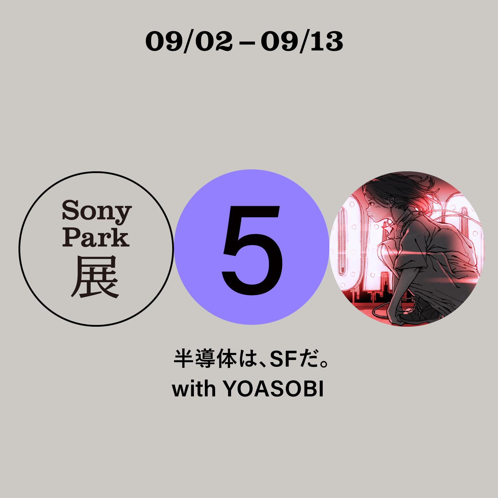

NEWS
2021.6.8
2024년 완공될 신 Ginza Sony Park의 공사를 앞두고 개최되는 기획전 'Sony Park전'에 millennium parade나
Creepy Nuts 등의 타 뮤지션과 함께 참가하는 것이 발표되었다. 발표 예정의 신곡을 테마로 체험할 수 있는 전시로, 요아소비는 '반도체는, SF다.'를 테마로 9월 2일부터
13일까지 전시될 예정.
2021.6.2

다나카 케이 주연의 연극 '만약에 생명을 그릴 수 있다면(もしも命が描けたら)' 테마곡을 담당하기로 결정되었음이 발표되었다. 희곡과 연출을 맡은 것은
하루카의 원작 '달왕자'를 집필했던 스즈키 오사무.
2021.5.10
메자마시 테레비의 테마곡이자 신곡, 9번째 디지털 싱글 '조금만 더(もう少しだけ)' 풀 버전 음원이 발매되었다. 신곡에 대한 여러가지 내용들을 5월
5일 0시, YOASOBIANNX에서 OA를 진행했다.
2021.4.20
NHK의 어린이 방송 'ひろがれ！いろとりどり'의 테마곡을 10월부터 담당하기로 결정되었음이 발표되었다. 이에 맞추어 'YOASOBI와 만드는 미래의
노래(YOASOBIとつくる 未来のうた)'라는 이름으로 6세부터 19세까지의 어린이와 청소년들에게 원작 소설을 모집하는 공모가 개시되었다.
2021.3.29
2021년 3월 29일부터 메자마시 테레비의 테마곡으로 신곡 '조금만 더(もう少しだけ)'가 사용되기 시작했다. 원작은 상술한 콘테스트에서 당선된
〈돌아간다.〉.